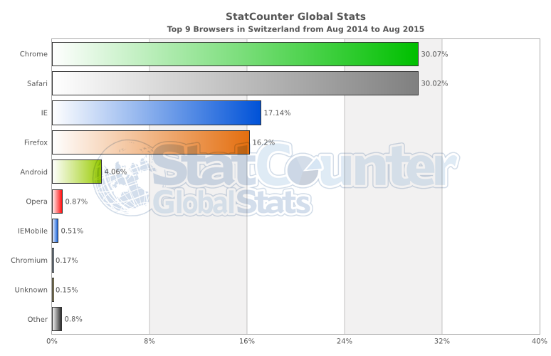
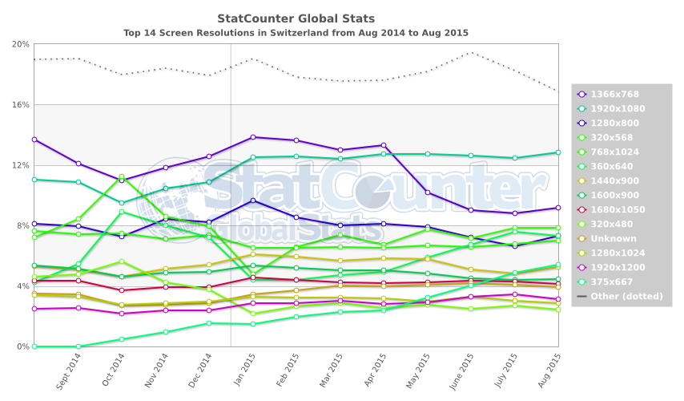
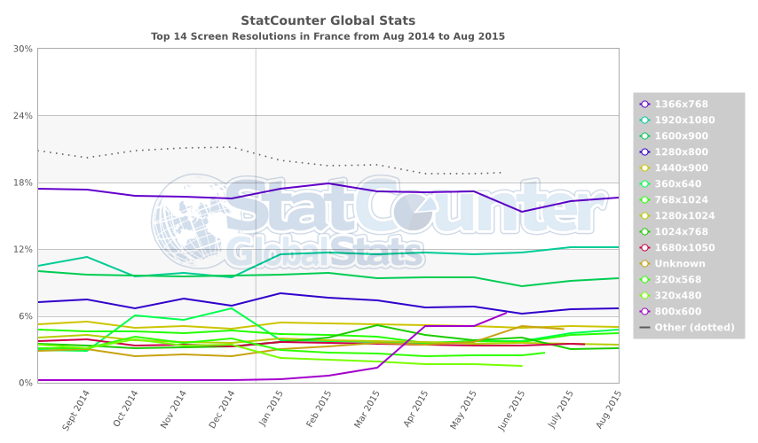
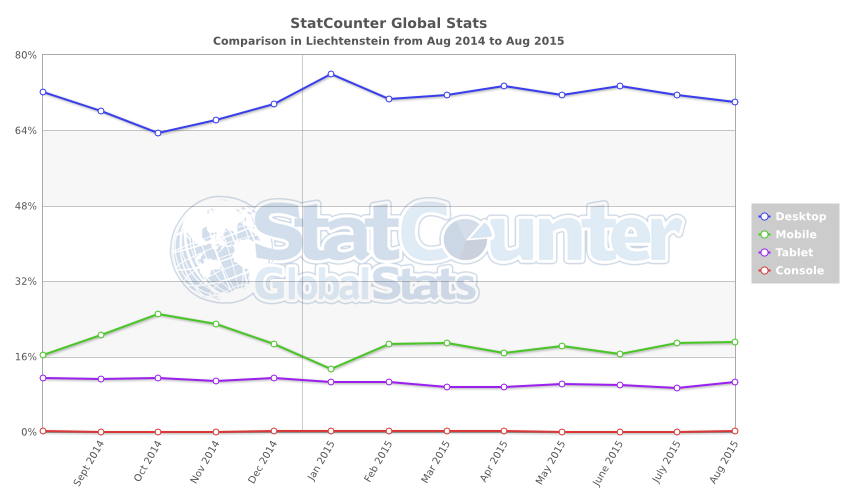

Швейцария. Фоменко В.А. ИП-42
Таблица 1. Статистика используемых браузеров
|  Рис. 1. Статистика используемых браузеров в Швейцарии |
 Рис. 2. Статистика используемых браузеров в Швейцарии |
| Рис. 3. Статистика используемых браузеров в Австрии |
Рис. 4. Статистика используемых браузеров в Австрии |
| Рис. 5. Статистика используемых браузеров в Лихтенштейне |
Рис. 6. Статистика используемых браузеров в Лихтенштейне |
| Рис. 7. Статистика используемых браузеров в Франции |
Рис. 8. Статистика используемых браузеров в Франции |
| Рис. 9. Статистика используемых браузеров в Италии |
Рис. 10. Статистика используемых браузеров в Италии |
| Рис. 11. Статистика используемых браузеров в Германии |
Рис. 12. Статистика используемых браузеров в Германии |
Таблица 2. Статистика используемых разрешений экранов
| Рис. 13. Статистика используемых разрешений экранов в Швейцарии |
 Рис. 14. Статистика используемых разрешений экранов в Швейцарии |
| Рис. 15. Статистика используемых разрешений экранов в Австрии |
Рис. 16. Статистика используемых разрешений экранов в Австрии |
| Рис. 17. Статистика используемых разрешений экранов в Лихтенштейне |
Рис. 18. Статистика используемых разрешений экранов в Лихтенштейне |
| Рис. 19. Статистика используемых разрешений экранов в Франции |
 Рис. 20. Статистика используемых разрешений экранов в Франции |
| Рис. 21. Статистика используемых разрешений экранов в Италии |
Рис. 22. Статистика используемых разрешений экранов в Италии |
| Рис. 23. Статистика используемых разрешений экранов в Германии |
Рис. 24. Статистика используемых разрешений экранов в Германии |
Таблица 3. Статистика используемых ОС
| Рис. 25. Статистика используемых ОС в Швейцарии |
Рис. 26. Статистика используемых ОС в Швейцарии |
| Рис. 27. Статистика используемых ОС в Австрии |
Рис. 28. Статистика используемых ОС в Австрии |
| Рис. 29. Статистика используемых ОС в Лихтенштейне |
Рис. 30. Статистика используемых ОС в Лихтенштейне |
| Рис. 31. Статистика используемых ОС в Франции |
Рис. 32. Статистика используемых ОС в Франции |
| Рис. 33. Статистика используемых ОС в Италии |
Рис. 34. Статистика используемых ОС в Италии |
| Рис. 35. Статистика используемых ОС в Германии |
Рис. 36. Статистика используемых ОС в Германии |
Таблица 4. Статистика используемых поисковых систем
| Рис. 37. Статистика используемых поисковых систем в Швейцарии |
Рис. 38. Статистика используемых поисковых систем в Швейцарии |
| Рис. 39. Статистика используемых поисковых систем в Австрии |
Рис. 40. Статистика используемых поисковых систем в Австрии |
| Рис. 41. Статистика используемых поисковых систем в Лихтенштейне |
Рис. 42. Статистика используемых поисковых систем в Лихтенштейне |
| Рис. 43. Статистика используемых поисковых систем в Франции |
Рис. 44. Статистика используемых поисковых систем в Франции |
| Рис. 45. Статистика используемых поисковых систем в Италии |
Рис. 46. Статистика используемых поисковых систем в Италии |
| Рис. 47. Статистика используемых поисковых систем в Германии |
Рис. 48. Статистика используемых поисковых систем в Германии |
Таблица 5. Статистика используемых устройств
| Рис. 49. Статистика используемых устройств в Швейцарии |
Рис. 50. Статистика используемых устройств в Швейцарии |
| Рис. 51. Статистика используемых устройств в Австрии |
Рис. 52. Статистика используемых устройств в Австрии |
| Рис. 53. Статистика используемых устройств в Лихтенштейне |
 Рис. 54. Статистика используемых устройств в Лихтенштейне |
| Рис. 55. Статистика используемых устройств в Франции |
Рис. 56. Статистика используемых устройств в Франции |
| Рис. 57. Статистика используемых устройств в Италии |
 Рис. 58. Статистика используемых устройств в Италии |
| Рис. 59. Статистика используемых устройств в Германии |
Рис. 60. Статистика используемых устройств в Германии |